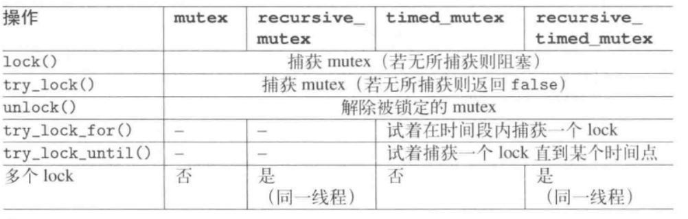

什么时候不使用并发？
- 启动线程时存在固有的开销，然后才能把新线程加入到调度器中，所有这一切需要时间，任务实际执行时间比启动线程的时间小则不适合使用线程
- 线程是有限的资源，每个线程都需要独占的堆栈空间，运行太多线程会耗尽进程的可用内存或地址空间；同时运行太多线程会消耗很多操作系统资源
- 运行越多的线程操作系统就需要做越多的上下文切换而耗费时间
怎样避免恶性条件的竞争？
- 采取保护机制，C++中主要以这种形式
- 无锁编程，不过这种方式很难得到正确的结果
- 使用事务的方式去处理数据结构的更新，目前C++中没有对STM进行直接支持
避免死锁：
- 避免嵌套锁，一个线程已经获得一个锁时，别再去获取第二个，尽量保证一个线程只有一个锁
- 当要求获取两个以上的锁时，以相同的顺序加锁
- 避免在持有锁期间调用用户提供的代码
可重入函数：可重入是并发安全的强力保障，可以在多线程下放心使用
- 一个函数被重入，表示这个函数没有执行完成，由于外部因素或内部调用，又一次进入该函数执行。只有有两种情况：
- 多个线程同时执行这个函数
- 函数自身调用自身
- 可重入表示该函数被重入之后不会产生任何不良后果，要成为可重入函数，必须具有以下几个特点：
- 不使用任何静态或全局的非const变量
- 不返回任何静态或全局的非const变量的指针——为什么不返回
- 仅依赖于调用方提供的参数——如果调用方参数是指针或引用，那是不是也是不安全的
- 不依赖任何单个资源的锁（如mutex等）——什么意思？
- 不调用任何不可重入的函数
过度优化：编译器为了提高变量x的访问速度将x放到某个寄存器中，不同线程中的寄存器是独立的，所以也有和不加锁的一样的情况出现的可能
- volatile：确保本条指令不会因编译器的优化而被省略，即系统每次从变量所在内存读取数据而不是从寄存器读取备份。对于每一个希望在多线程中被共享的变量，都应该以volatile修饰，可以做到两件事：——待验证
- 阻止编译器为了提高速度将一个变量缓存到寄存器而不写回
- 阻止编译器调整操作volatile变量的指令顺序
使用C++标准库中的多线程带来的开销并不比手工编写等效函数的要高，而且编译器可能会很好的内联大部分代码
高级接口：
一. async：#include<future>
- 用法：async：尝试将其所获得的函数立刻异步启动于一个分离线程内，返回future对象，这个返回对象是必要的，因为
- 允许你取地传给async的那个执行函数的未来结果，是个返回值或异常
- 必须存在，因为并不保证传入的函数一定会被启动和结束，需要future对象才能强迫启动
- future<>：允许等待线程结束并获取结果，结果是一个返回值，或一个异常
如果传给async的可调用对象不返回任何东西，async()会产生一个future<void>,get()会返回“无物”
std::future<int> result1(std::async(func));
int result = result1.get() + result2;
result.get()：一个future<>只能被调用get()一次，在那之后future就处于无效状态，而这种状态只能借由对future调用valid()来检测
随着get的调用，以下三件事之一会发生：
- 如果func1被async启动于一个分离线程中并已经结束，会立刻获得其结果
- 如果func1被启动但尚未结束，get会引发停滞，待func1结束后获得结果
- 如果func1尚未被启动，会被强迫启动如同一个同步调用，get会引发停滞直至产生结果
遵循：早调用，晚返回的原则
Launch(发射)策略：
1. future async(std::launch::async, F func, args ...):异步
- 尝试启动func并给予实参args，形成一个异步任务，如果办不到就抛出std::system_error异常，带有差错码std::errc::resource_unavailable_try_again
- 有了这个发射策略，就不必非得调用get()了，如果不将结果赋值出去，调用者会在此停滞到目标函数结束，就相当于是同步调用—？
- 被启动的线程保证在程序结束前完成，除非程序中途失败；
- 以下情况会结束线程：
- 对返回的future调用get()或wait()
- 如果最后一个指向返回之future所代表的shared state的object被销毁
- 这意味着对async()的调用会造成停滞直到func完成
2. future async(std::launch::deferred, F func, args ...)：同步
- 传递func并带实参args，形成一个推迟任务，当我们对返回的future调用wait或get时那个推迟的任务被同步调用
- 如果没有调用wait或get，这个任务不会启动
3.future async(F func, args ...)
- 相当于async携带std::launch::async和std::launch::deferred组合而来的launch发射策略，如果当前不能立即发射，会造成func被推迟调用
- 这个调用的唯一保证是对返回的future对象调用get或wait方法
- 如果没有调用get或wait方法，func有可能永远不会被调用
- 如果无法异步调用func，这个形式的async不会抛出system_error异常
result.wait()：强制启动该future象征的线程并等待这一后台操作的终止。允许等待后台操作完成而不需要处理其结果；这个接口一个调用一次以上，也可以结合一个时间段或时间点以限制等待时间
另外有两个类似函数，但并不强制启动线程，如果线程尚未启动的话：
- result.wait_for():让异步运行的操作等待一段时间
- result.wait_until():等待直至达到某个时间点
这两个函数返回以下三种之一：——未验证
- std::future_status::deferred：async延缓了操作而程序中又完全没有调用wait或get
- std::future_status::timeout：如果某个操作被异步启动但尚未结束，而waiting又已经逾期
- std::future_status::ready：操作完成
二. future和shared_future
(1). 唯一期望future：使用future等待一次性事件(如果多次推荐使用条件变量)，用来表现某一操作的成果：async，pakcaged_task, promise; 可能是返回值或异常，但不会二者都是，这份成果被管理于一个shared state内，可以被async或packaged_task或一个promise创建出来，有两种期望：唯一期望future和共享期望shared_future；可以移动但不能拷贝
注意：
- 成果只能被取出一次，因此future对象在调用完get后处于无效的状态
- 如果future是被async返回且其相关的task受到推迟，对他调用wait或get会同步启动task，但wait_for和wait_util都不会令一个被推迟任务启动
- future既不提供拷贝构造也不提供拷贝赋值运算符，确保不会有两个对象共享同一后台操作状态。将某个future状态搬移至另一个的唯一方法是调用移动构造或移动赋值运算符
方法：
1. get被调用，以下三件事之一会发生：
- func()会被async启动于一个分离线程中并已经结束，会立刻获得结果
- func()被启动但尚未结束，get()会引发停滞等待func()结束后再获取结果
- 如果func()尚未被启动会强迫启动如同同步调用，get引发停滞直到产生结果
2.wait
3.wait_for(dur)：阻塞dur时间段，但推迟的线程并不会被强制启动
4.wait_until(tp)：阻塞直到时间点tp，但推迟到线程并不会被强制启动
5.valid()：如果f还有效就返回true，然后才可以调用以下/上函数
6.shared()：产生一个shared_future带有当前状态，并令当前future对象的状态失效
(2). 共享期望shared_future：
与future的差异：
- 允许多次调用get，因此get不会令其状态失效
- 支持copy（拷贝构造和拷贝赋值运算符）
- 不提供share()
- get()是个const成员函数，返回一个const reference指向存储于shared state的值——？
std::shared_future:可以寻常的future为初值
- 方法：
- share()
低层接口：
一. thread：
- 可以移动但不能拷贝
- 不可复制保证了在同一时间点一个thread实例只能关联一个执行线程；
- 可移动性使得程序员可以自己决定哪个实例拥有实际线程的的所有权
- 特点：
- 将目标函数启动于一个新线程中，如果无法做到就会抛出std::system_error并带差错码resource_unavailable_try_again
- 没有接口可获得线程处理结果，唯一可以获得的是一个独一无二的线程ID
- 如果发生异常，但未被捕捉到线程内，程序会立刻终止并调用std::terminate()；若想将异常传递至线程外的某个context，必须使用exception_ptr——？
- 必须声明是否等待线程结束(调用join)或打算将它自母体卸离(调用detach)，使它运行于后台不受任何控制。如果不这么做，或它发生一次移动赋值(move assignment)，程序会中止并调用std::terminate
- 如果让线程运行于后台而main()结束了，所有的线程被硬性终止
- Detached Thread需要注意的问题：
- 绝不要让detached线程访问任何寿命已经结束的对象，所以建议以by value的方式传递
- 如果detached thread使用了全局或静态变量：
- 确保在使用全局或静态变量的的detached thread结束之前，这些变量不被销毁，一种做法就是使用条件变量通知
- 以调用quick_exit的方式结束程序。这个函数之所以存在完全是为了以不调用全局和静态对象的析构函数的方式结束程序
- 牢记一个经验法则：终止detached thread的唯一安全方法就是搭配"...at_thread_exit"函数群中的某一个，这会强制主线程等待detached thread真正结束
- 倾向于在无异常的情况下使用join，需要在异常处理过程中调用join从而避免生命周期的问题
- 向线程函数传递参数，默认参数要拷贝到线程独立内存中，即使参数是引用形式——？使用std::ref将参数转化成引用形式。C++并发编程实战2.2
- 成员：
- join():等待线程完成，只能对一个线程使用一次join；调用join还清理了线程相关的存储部分；当线程运行之后产生异常，在join调用之前抛出，就意味着这次调用很可能会被跳过；通常倾向于在无异常的情况下调用join，需要在异常处理过程中调用join，从而避免生命周期问题
- joinable():如果使用过join，对其使用joinable时将返回false；同样，joinable返回true才可以使用detach，所以join和detach需要joinable做检查
- detach()：分离，让线程在后台运行
- std::thread::id / std::this_thread::get_id():获取当前线程ID，唯一可对thread ID执行的操作是对他们进行比较，或是将他们写到一个输出流中。此外有个哈希函数用来在非定序容器中管理thread ID
- unsigned int std::thread::hardware_concurrency()：static成员函数，用来查询并行线程的可能数量，该数量只是个参考值，不保证正确；如果数量不可计算或不明确返回值是0
- 疑惑点：
- thread是不可拷贝的，为啥能push_back到容器中
二. Promise：和future object是配对兄弟，二者都能暂时持有一个shared state，但future允许取回数据，promise object却是提供数据。promise内部会建立一个shared state，在这里用来存放一个相应类型的值或异常，并可被future object取其数据当作线程结果，一旦shared state存有某个值或某个异常，其状态就会变成ready，于是可以在其他地方取出其内容，但是取出动作需要借助一个共享相同shared state的future object；可以移动但不能拷贝。
- 方法：
- swap(p1, p2)/p1.swap(p2)：互换p1和p2的状态
- p.get_future()：产生一个future对象用以取回shared state，只能调用get_future()一次，第二次调用会抛出std::future_error的异常并带有差错码std::future_already_retrieved
- set_value()
- set_exception()
- set_value_at_thread_exit()
- set_exception_at_thread_exit
- 注意：
- 通过调用shared state的future object的get会停滞直到shared state成为ready，当promise的set_value或set_exception()执行后便是如此
- 不能既存储值又存储异常，企图这么做会导致std::future_error并夹带错误码
三. package_task：#include<future> 对一个函数或可调用对象绑定一个期望。当std::packaged_task<>对象被调用，它就会调用相关函数或可调用对象，将期望状态置为就绪，返回值也会被存储为相关数据。被用来同时持有目标函数及其结果，结果是某个返回值或目标函数触发的异常；可以移动但不能拷贝——干啥的还没有搞懂
方法：
- swap(p1, p2)/p1.swap(p2)：两个packaged task互换
- p.valid（）：如果p有一个shared state就产生true
- p.get_future()：产出一个future对象，用来取回shared_state
- p.make_ready_at_thread_exit(args)：调用task并在线程退离时令shared state称为ready
- p.reset()：为p建立一个新的shared state
Namespace this_thread：
- this_thread: #include<thread>, 针对任何线程，用以提供线程专属的global函数，有以下方法：
- this_thread::get_id():当前线程的ID
- this_thread::sleep_for(dur):将线程阻塞dur时间段
- this_thread::sleep_until(tp): 将某个线程阻塞直到时间点tp
- this_thread::yield()：建议系统释放控制以便重新调度让下一个线程能够执行
其他信息：
线程本地变量：thread_local关键字声明，命名空间内的变量，静态成员变量，本地变量都可以声明成线程本地变量；一旦声明一个变量为thread_local,其值将在线程开始时初始化，而在线程结束时将不再有效
同步：
哪些情况下可能出错：
- 未同步化的数据访问：并行运行的两个线程读和写同一笔数据，不知道哪一个语句先来
- 写至半途的数据：某个线程正在读数据，另一个线程改动它，于是读取中的线程可能读到改了一半的数据，读到一个半新半旧值
- 重新安排的语句：语句和操作有可能重新安排次序，因为C++只要求编译所得的代码在单一线程内的可观测行为正确，所以很有可能重新安排数据，只要单一线程的可视效果相同
解决问题所需要的性质：
- 不可切割性：读写一个变量或语句，其行为是独占的
- 次序：保证按具体指定语句次序执行
解决方法（由高级到低级排序）：
- future和promise都保证不可切割性和次序：一定是在形成结果之后才设定shared state
- mutex和lock：授予独占权
- 条件变量：
- 原子操作
- 原子操作的底层接口：它允许放宽atomic语句的次序或针对内存访问使用手指藩篱——待验证
mutex和lock：独占式访问资源
mutex：同一时间只可以被一个线程锁定,同一个锁多次锁定会造成死锁；通过成员函数lock()进行上锁，unlokc进行解锁
recursive_mutex: 允许同一时间多次被同一线程获得其lock，允许同一线程多次锁定，并在最近一次相应的unlock时释放lock
time_mutex：额外允许传递一个时间段或时间点，用来定义多长时间内它可以尝试捕捉一个lock；为此它提供了try_lock_for()和try_lock_until()
recursive_timed_mutex：允许同一线程多次取得lock，可以指定期限
- try_lock():想获得一个lock，但不成功的话不想阻塞；该函数成功锁定返回true，否则返回false
- 为了能够使用lock_guard,可以传一个额外实参adopt_lock给其构造函数
- 注意：
- try_lock有可能假失败，即lock并未被拿走但也有可能失败
- 不要将受保护数据的指针或引用
- 为了等待特定长度的时间，可以使用time mutex: timed_mutex和resursive_timed_mutex,允许调用try_lock_for和try_lock_until,用以等待某个时间段或达到某个时间点

recursive_mutex：嵌套锁
尝试性lock：尝试获得一个lock，如果不能成功的话不想被永远阻塞住，try_lock,为了能够使用lock_guard，可以传递一个额外实参adopt_lock给构造函数
- 异常：
- 第二次lock抛出异常std::system_error,并带差错码resource_deadlock_would_occur
一. lock：可以一次性锁住多个互斥量，并且没有副作用
二. lock_guard<..>(..):
三. unique_lock<>():
- 优点：析构时mutex仍被锁住其析构会自动调用unlock()，如果没有锁住mutex则析构不做任何事
- 与lock_guard相比，unique_lock添加了三个构造：
- try_to_lock:企图锁住mutex但不希望被锁住 unique_lock<mutex> lock(mutex, std::try_to_lock)
- 传递一个时间点或时间段给构造，尝试在一个明确的时间周期内锁定 unique_lock<timed_mutex> lock(mutex, std::chrono::seconds(1))
- 传递defer_lock,表示初始化这一个lock object但尚未打算被锁住mutex unique_lock<mutex>
- 此外，unique_lock提供release来释放mutex，或将mutex的拥有权转移给另一个lock
- 用法：和条件变量配合使用，先用unlock锁住，接着条件变量的wait会去检查这些条件，当条件满足时返回，如果条件不满足，wait会解锁互斥量，将当前线程置于等待状态；当准备数据的线程调用notify_one/norify_all通知条件变量时,处理数据的线程从睡眠状态中苏醒，重新获取互斥量并且对条件再次检查
- 方法：
只调用一次：#include<mutex>
- call_once：第一实参必须是相应的once_flag，确保传入的机能只被执行一次,下一实参是可调用对象；比起锁住互斥量，并显示的检查指针，每个线程只需要使用是他的std::call_once,在std::call_once结束时，就能安全的知道指针已经被其他的线程初始化了。使用是std::call_once比显示使用互斥量消耗的资源更少
条件变量：#include<condition_variable>,condition_variable和condition_variable_any
运作如下：
- 必须#include<mutex>, #include<condition_variable>, 并声明一个mutex和一个condition_variable
- 激发条件终于满足的线程必须调用notify_one或notify_all
- 等待的线程必须调用std::unique_lock<mutex> l(readyMutex); readyCondVar.wait(1)
condition_variable:仅限于与std::mutex一起工作，多个线程可以等待某特定条件发生，一旦条件满足，
如果无法建立condition_variable，构造函数会抛出std::system_error异常
- 方法：
- wait(ul)/wait(ul, pred)：使用unique lock来等待通知/直到pred在一次苏醒之后结果为true。等待条件被满足的线程必须调用wait；wait内部会明确对mutex进行解锁和锁定
- wait_for(ul, duration) / wait_for(ul, duration, pred)：使用unique lock ul来等待通知，等待期限是duration/或知道pred在一次苏醒之后结果为true
- wait_until(ul, timepoint)/wait_until(ul, timepoint, pred)：使用unique lock ul来等待通知，直到时间点timepoint/或直到pred在一次苏醒之后结果为true
- notify_one()/notify_all()：激发条件满足的线程必须调用notify_one或notify_all
- 注意：condition变量有可能有假醒，也就是wait动作有可能在condition尚未被notified时便返回——具体在什么情况下发生假醒？所以在唤醒之后还要验证条件是否已达成
condition_variable_any：可以和任何满足最低标准的互斥量一起工作，但是会产生额外的开销
原子操作：#include<atomic>，原子操作
是一类不可分割的操作，不可以再分解为基本类型，包括整型，实型等。当这样的操作在进行到一半的时候，你是不能查看的，它的状态要不是完成，要不就是未完成。
std::atomic_flag：简单的布尔标识，在这种类型的操作上都需要是无锁的。可以在两个状态之间进行切换：设置和清除
- 特点：相比其他atomic类型，atomic_flag是无锁的；并且不提供is_lock_free()成员函数；atomic<bool>不是无锁的，未来保证操作的原子性，其实现中需要一个内置的互斥量
- 每一个原子操作默认的内存顺序都是memory_order_seq_cst
- 缺陷：这个方法局限性强，没有非修改查询操作，不能像bool标识那样使用，所以最好使用std::atomic<bool>
- 初始化：首次使用时必须被值ATOMIC_FLAG_INIT初始化，表示清除状态，即false
- 不能拷贝构造一个std::atomic_flag对象，并且也不能将一个对象赋予另一个std::atomic_flag对象，这不是atomic_flag特有的，而是所有原子类型共有的
- 当标志对象已初始化，只能做三件事：销毁，清除，设置
- 方法：
- 销毁：clear()
- 查询或设置：test_and_set()
- atomic_flag非常适合于做自旋锁
自旋锁：
- 与互斥锁相比，自旋锁在获取锁的时候不会使得线程阻塞而是一直自旋尝试获取锁，当线程等待自旋锁的时候CPU不能做其他事情，而是一直处于忙等待状态
- 主要适用场景：主要适用于被持有时间短，线程不希望在重新调度上花过多时间的情况
- 使用自旋锁要注意：由于自旋时不释放CPU，如果在持锁时间很长的场景下使用自旋锁，会导致CPU在这个线程的时间片用尽之前一直消耗在无意义的忙等上，造成浪费；因而持有自旋锁的线程应该尽快释放自旋锁
std::atomic<T>:原子类型只能从模板参数中构造，不允许拷贝构造和拷贝赋值，移动构造，不过从atomic<T>类型的变量来构造其模板参数T的变量则是可以的。
总是应该将atomic对象初始化，因为默认构造函数不一定完全初始化它（倒不是初值不明确，而是其lock未被初始化）。如果只使用default构造函数，接下来唯一合法的操作是调用：（静态变量怎样初始化？）
std::atomic<bool> readyFlag;
std::atomic_init(&readyFlag, false);
方法：
- a.store(val)：赋予一个新值val并返回void
- a.load()：返回数值a的拷贝
- a.exchange(val)：交换val并返回旧值a的拷贝
- atomic a; atomic_init(&a, val)：初始化a
- a.is_lock_free()：如果内部不使用lock便返回true——具体作用？只有std::atomic_flag类型不提供is_lock_free()成员函数
- a.compare_exchange_strong(exp, des)：这个两个函数具体不清楚是干啥的
- a.compare_exchange_weak(exp, des)
- a.fetch_add(val)：不可切割之t+=val？，返回新值拷贝
- a.fetch_sub(val)
- a+=val / a-=val
- a++/++a/a--/--a
- a.fetch_and(val)/a.fetch_or(val)/a.fetch_xor(val)
- a&=val/a|=val/a^=val
模板std::atomic<>，存在的目的是除了标准原子类型外，允许用户使用自定义类型创建一个原子变量。
- 自定义类型使用该模板的要求：自定义类型是不是要求是POD类型
- 必须有拷贝赋值运算符，这就意味着这个类型不能有任何虚函数或虚基类，以及必须使用编译器创建的拷贝赋值操作—？
- 这个类型必须是位可比的，可以使用memcpy进行拷贝，还需要确定其对象可以使用memcmp对位进行比较，之所以这么要求是为了保证比较交换操作能正常工作
- 通常情况下编译器不会为std::atomic<>类型生成无锁代码，所以他将对所有操作使用一个内部锁

atomic的C风格接口：对C标准的扩充

atomic_init
atomic_store
atomic_load
atomic低层接口：意味着使用atomic操作时不保证顺序一致性，
原子操作的内存顺序：默认memory_order_seq_cst，代表三种内存模型：
- 排序一致序列：
- memory_order_seq_cst
- 获取-释放序列：原子加载(memory_order_acquire)就是获取操作，原子存储(memory_order_release)就是释放操作，在这里不是获取就是释放，或者两者兼有操作(memory_order_acq_rel)
- memory_order_consume
- memory_order_acquire：原子加载
- memory_order_release：原子存储
- memory_order_acq_rel：
- 自由序列：没怎么懂
- memory_order_relaxed
并发数据结构的设计：
需要思考，如何让序列化访问最小化，让真实并发最大化：
- 锁范围中的操作，是否允许在锁外执行？
- 数据结构中不同的区域能否被不同的互斥量所保护？
- 所有操作都需要同级互斥量保护吗
基于锁的并发数据结构设计，需要确保访问线程持有锁的时间最短
可能出现的问题：
- 无意中传递了保护数据的引用：不要将受保护数据的指针或引用传递到互斥锁之外，如通过返回值或参数形式传递到外面——C++并发编程57
- 发生在接口上的条件竞争：C++并发编程60
内存模型：通常是一个硬件上的概念，表示的是机器指令是以什么样的顺序被处理器执行的
- 强顺序：按顺序执行，X86是强顺序模型
- 弱顺序：不按顺序执行，可以使指令执行的性能更高
顺序一致性：
- 在C++11中原子类型的成员函数总是保证了顺序一致性，对于x86平台来说禁止了编译器对原子类型变量间的重排优化，默认memory_order_seq_cst。C++11中设计者给出的解决方式是让程序员为原子操作指定所谓的内存顺序：memory_order
- memory_order_relaxed：自由序列，没有任何同步关系
- memory_order_acquired：本线程中，所有后续的操作
- memory_order_release：
- memory_order_acq_rel：
- memory_order_consume：
- memory_order_seq_cst：全部都按顺序执行：序列一致是最简单，最直观的序列，但也是最昂贵的内存序列，因为需要对所有线程进行全局同步
无锁数据结构
volatile：用来提供过度优化，既不保证不可切割，也不保证次序
terminate函数在默认情况下是去调用abort函数的，不过用户可以通过set_terminate函数来改变默认行为
abort函数更加底层，abort不会调用任何析构
exit属于正常退出，会调用自动变量的析构函数，并且还会调用atexit注册的函数，这和main函数结束时的清理工作是一样的
C++11标准引入快速退出：quick_exit,at_quick_exit